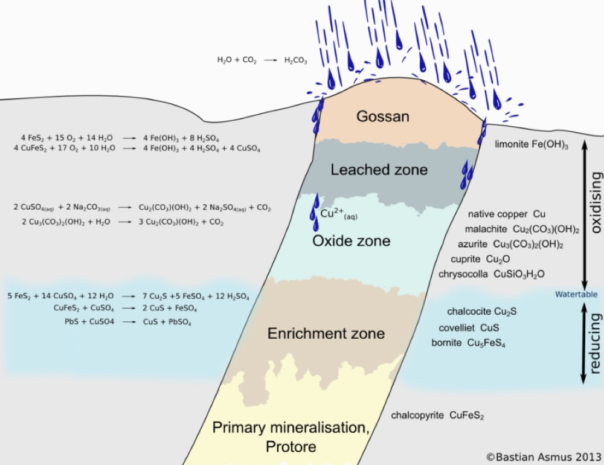
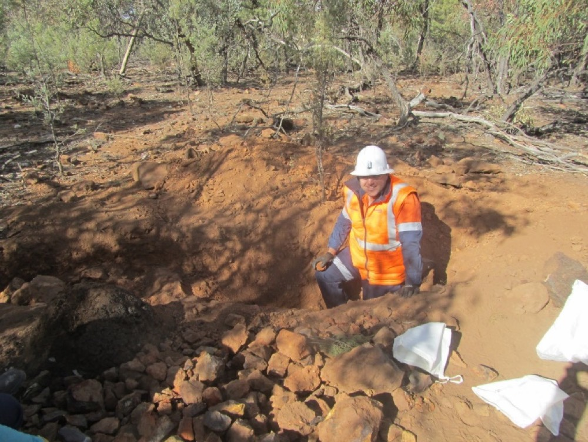
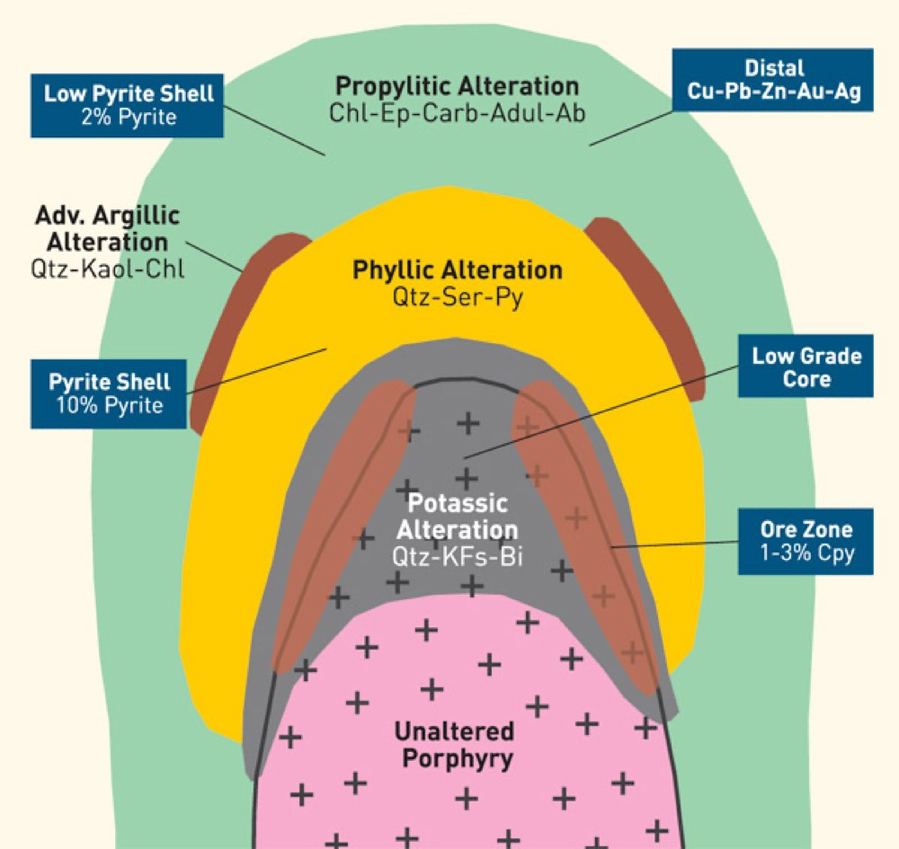
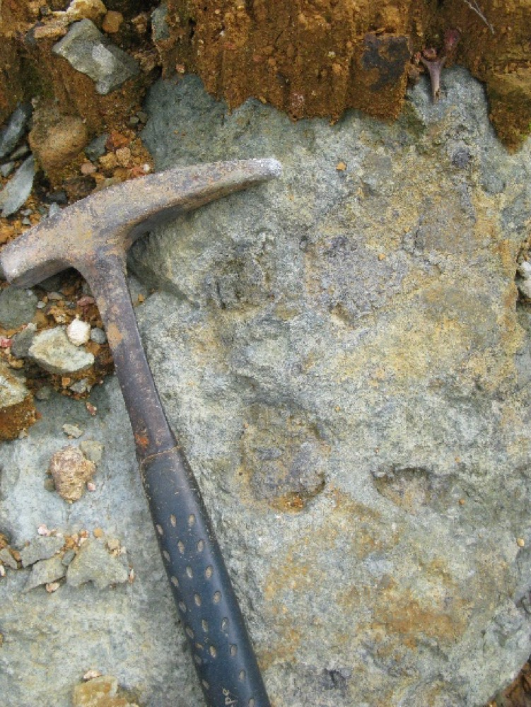
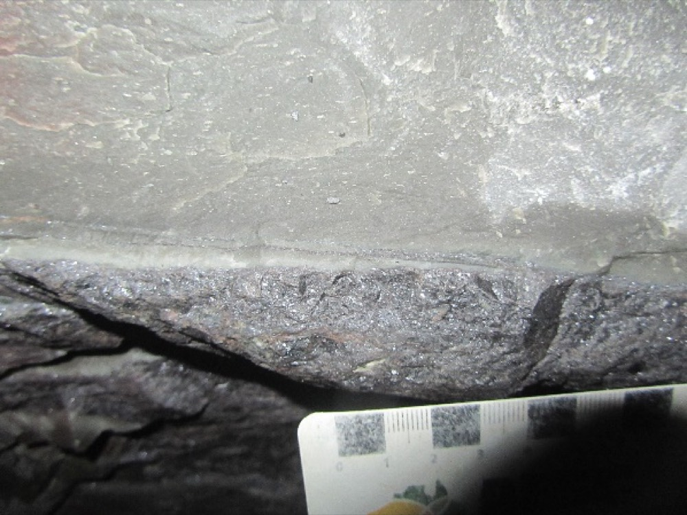
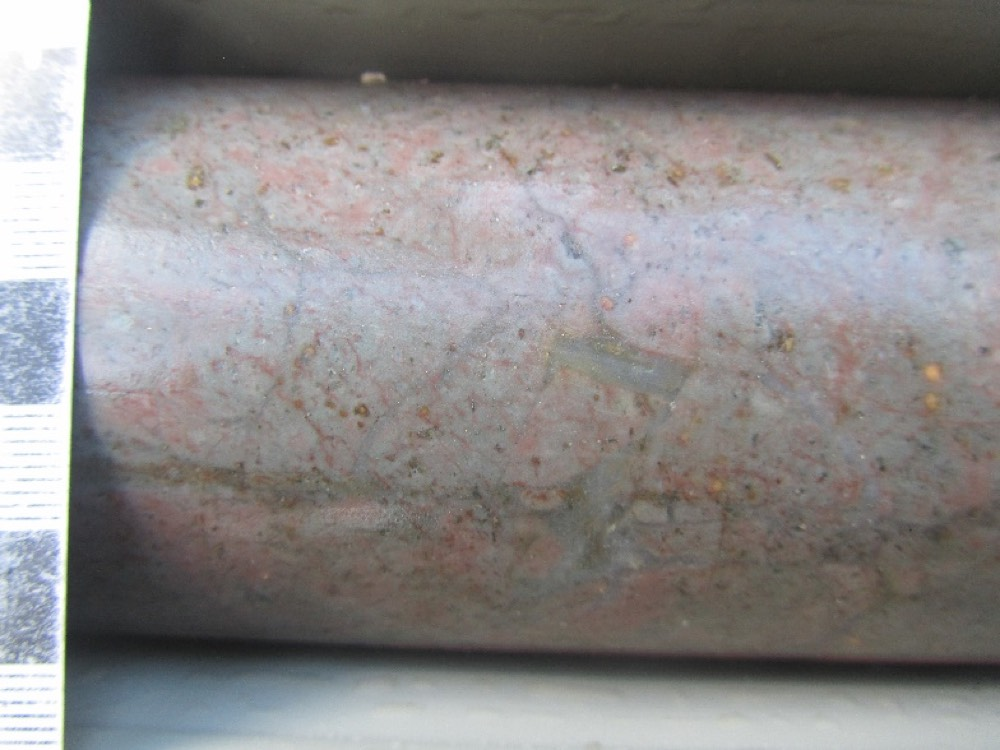
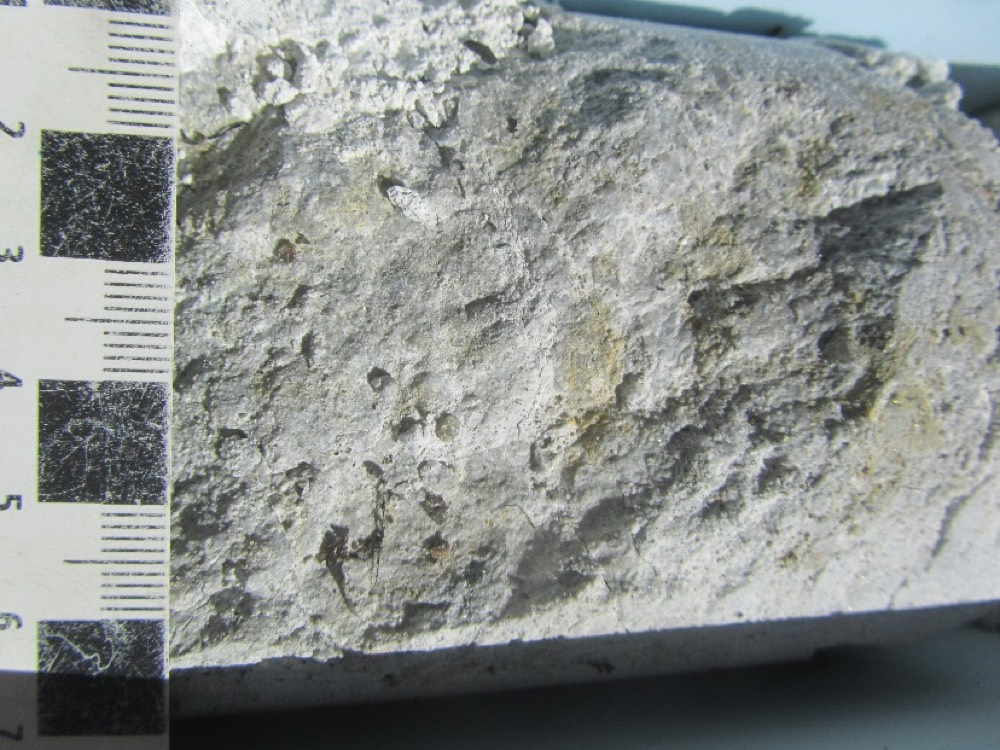
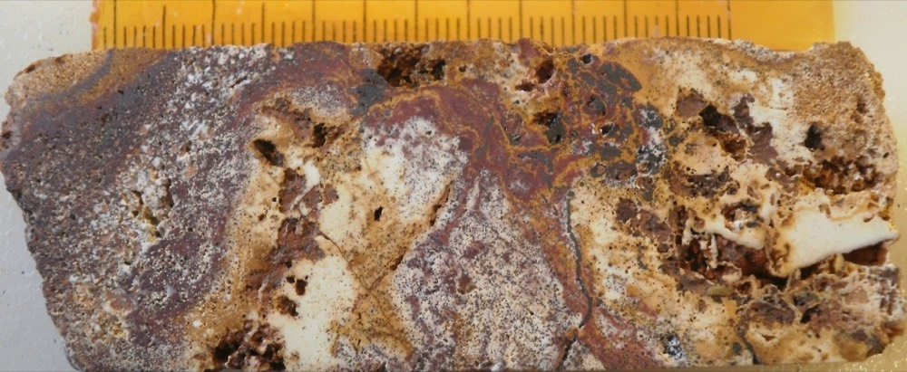

Oxidation and gossans
At the surface, oxidation changes sulphides (mostly pyrite and pyrrhotite) into iron oxides. The type of iron oxide tells you about the water. Goethite shows a water level that stayed in one place. Hematite shows moving water. The oxides have different textures, depending on which other sulphides were present, their grain size, and how they were arranged. When these oxides are above an ore deposit, they are called . lab notes, oxidation
Oxidation also releases the metals. They combine with anions in groundwater that contains oxygen (phosphate, sulphate, carbonate, arsenate) and form secondary minerals, which often have bright colours. Examples are pyromorphite (lead phosphate), azurite and malachite (copper hydroxy-carbonates), cerussite (lead carbonate), smithsonite (zinc carbonate), anglesite (lead sulphate), jarosite (iron sulphate) and scorodite (iron arsenate). lab notes, oxidation


This pit is dug into an exposed gossan in the southern Cobar Basin. What colour is the material? Which iron oxide would you expect to be most common in it?
Show what I see
- Red-brown to orange-brown soil and broken rock, much redder than the bush around it.
- Sample bags in a line next to the pit.
This is the Dominion Prospect gold gossan. The red-brown colour shows hematite and goethite from oxidised sulphides. Red hematite suggests moving water. The bags are there because gossans are sampled for the metals that stay behind, including gold. lab notes, oxidation
Lab gossan examples
What alteration is
Alteration happens when hot, usually acidic, hydrothermal water enters a rock. In igneous rocks, the original minerals change into alteration minerals. Which minerals form depends on the original minerals and the fluid. The original igneous texture is often still visible. The difference from metamorphism is where it happens. Metamorphism affects the whole rock mass. Alteration only happens in zones that were very permeable, so it is patchy. lab notes, alteration

The five alteration types
Each type below comes with the example from the lab notes. Look at the photo first, then open the answer. Where the lab alteration set has more examples, you can look through them.
Propylitic

Name the two colours in this rock and the minerals that make them.
Show what I see
- Patches of yellow-green, and duller grey to olive green, over the whole surface.
This is propylitic alteration: yellow-green epidote and grey-green chlorite. lab notes, propylitic
Propylitic alteration gives a typical yellow-green (epidote) to olive-green (chlorite) colour. The rock gains calcium, iron and magnesium, and loses potassium and sodium. Sometimes sodium increases instead (albite forms). The usual minerals are chlorite, epidote and a lot of fine-grained disseminated pyrite. Carbonate is very common, and is often the last mineral to crystallise, at a lower temperature. Hematite can also be common, especially in epithermal systems. When there is a lot of hematite, it is called hematite flooding. lab notes, propylitic
Phyllic

The pale layer was once a dark siltstone. What gives it its colour and shine?
Show what I see
- A pale, almost white band with a soft shine, sharply above darker rock.
This is siltstone with phyllic alteration, made of fine illite-muscovite and quartz. Sheet silicates (phyllosilicates) crystallising in the rock give it this shine. lab notes, phyllic
Phyllic alteration gives the rock a typical shine from sheet silicates (mostly chlorite, illite and muscovite) and fine quartz. Illite changes to muscovite at about 240 °C, so the mica tells you the temperature. , which is between illite (a clay) and muscovite (a mica), is common. When the micas are quite coarse, it is called . lab notes, phyllic
Potassic

Which mineral makes this core pink?
Show what I see
- Pale pink to salmon core with fine grey patches.
This is potassic alteration. The pink colour comes from hydrothermal K-feldspar, often the low-temperature type . lab notes, potassic
Potassic alteration gives a typical pink to pale orange colour from K-feldspar (often adularia), with biotite, muscovite and quartz. lab notes, potassic
Argillic

The core is pale and crumbly. What happened to its feldspar?
Show what I see
- Very pale grey, rough, crumbly core that looks weak.
This is argillic alteration with a lot of illite. The feldspar has broken down to clay, which bleaches the rock and makes it much weaker. lab notes, argillic
Argillic alteration makes clay minerals, usually when feldspar breaks down: kaolinite, dickite, illite and montmorillonite, with muscovite and quartz. It makes the rock very pale and much weaker. lab notes, argillic
Advanced argillic

There are four colours: pure white, yellow-white, red and yellow-brown. Match each colour to a mineral.
Show what I see
- Pure white, yellow-white, red and yellow-brown patches mixed together.
This is advanced argillic alteration: alunite (yellow-white), hematite (red), goethite (yellow-brown) and kaolinite (pure white). lab notes, advanced argillic
Advanced argillic alteration forms close to the surface and is also called steam-heated alteration. It forms at very low temperature. It makes opaline silica (a ), (a sulphate), pyrophyllite (similar to talc), dickite (a higher-temperature form of kaolinite) and smectite (clays that swell). lab notes, advanced argillic
Name the alteration0 / 6
- Propylitic: chlorite + epidote + fine pyrite ± carbonate, yellow-green to olive green.
- Phyllic: illite-muscovite (sericite) + quartz ± pyrite, a sheen; illite turns to muscovite near 240 °C.
- Potassic: K-feldspar (adularia) + biotite, pink to pale orange.
- Argillic: clays from feldspar, pale and weak.
- Advanced argillic: alunite, kaolinite/dickite, pyrophyllite, opaline silica; near-surface, steam-heated.
Reading the chart
The chart at the top of this page shows all these types on two axes. From left to right is pH: strongly acidic on the left (silica and alunite) to almost neutral on the right (chlorite and calc-silicates). From top to bottom is temperature: epithermal at the top, through mesothermal, to porphyry at the bottom. Each box is a group of minerals (an assemblage) that is stable at those conditions. Corbett and Leach chart
Read it like a map. A rock with alunite and kaolinite formed in cool, very acidic fluid, high in an epithermal system. Sericite and quartz mean almost neutral fluid that was hot enough to form mica. Biotite with K-feldspar and magnetite is the hot, deep core of a porphyry. Garnet, clinopyroxene and wollastonite show the same heat, but in limestone: a skarn. Acid alteration also continues downwards. The chart shows alunite, dickite and pyrophyllite changing to andalusite and corundum at porphyry temperatures. This is how a lithocap can be on top of a porphyry. Corbett and Leach chart
Be careful with two things. First, the steam-heated advanced argillic alteration in the lab notes is only the cool top-left corner of the yellow area. Second, the same mineral can appear in more than one box (quartz is everywhere). So you plot the whole assemblage, not one mineral. Change the chart to "Where does it plot?" to practise. Corbett and Leach chart lab notes
Kaolinite or illite?
The lab asks you to compare kaolinite and illite, and to work out how to tell them apart. Both are white to pale clays, so it is useful to know what to test before you are at the bench. Here is the information the course material gives you. Do the comparison on the real specimens yourself.
- Where they plot. Kaolinite is in the kaolin group, which is more acidic. Illite is in the illite group, which is closer to neutral. They change into each other through the I-K column. Corbett and Leach chart
- What they change into. When heated, kaolinite changes to dickite and then pyrophyllite. Illite changes to muscovite (sericite) at about 240 °C. This is why rock rich in illite often has a shine. Corbett and Leach chart lab notes, phyllic
- Hand-specimen tests. Kaolinite is white, with a dull, earthy lustre. It is soft (2 to 2.5) and smells earthy when wet. Mineral Sudoku sheet GEOS2181 Labs 1-2, slides 13 and 31
Compare the lustre, the feel and the smell side by side, and note which one has a shine. In industry, the two are usually separated with a short-wave infrared spectrometer, because it is really difficult by eye. (This last point is general background, not from the lab notes.)
Structures and mining
All ore deposits are controlled by structures to some degree. Many (especially epithermal, orogenic gold, hydrothermal and porphyry deposits) are strongly controlled. Structures also cause problems. Faults, shear zones, zones of closely spaced fractures, and zones made weak by alteration minerals (talc, chlorite, muscovite, pyrite-marcasite) can cause major engineering problems and can even close a mine. Health is also affected by structures and minerals. Amphiboles must be monitored for asbestos, and fine-grained quartz for silicosis. lab notes, structures
For each structure, the lab asks for its type, its spacing, whether it is primary or secondary, and its continuity. Then it asks what the structure means for mining and for the mineralisation. Practise the words on core that you have already seen on the logging page. lab notes, structures
Describe the structure0 / 5
- For an altered specimen, name the type from its assemblage and colour: yellow-green epidote and chlorite (propylitic), a sheen of sericite and quartz (phyllic), pink K-feldspar (potassic), pale weak clay (argillic), alunite, kaolinite and silica (advanced argillic).
- For a gossan, say whether goethite or hematite dominates and what that implies about the water, and look for bright secondary minerals.
- For a structure, give type, spacing, primary or secondary, and continuity.
Self-test
Answer each question out loud or on paper before you open it. If your answer was right, claim the ounces.
Glossary and flashcards
Terms used in this lab. Tap a dotted word in the text to see its meaning.
Flashcards
Where this goes next
Lecture 2 explains the theory of gossans and alteration assemblages. Lecture 11 shows the zoning around a porphyry. Lecture 14 uses the acidic side of the chart for high-sulphidation epithermal deposits. For more specimens, the lab test has 78 alteration photos from the lab set.